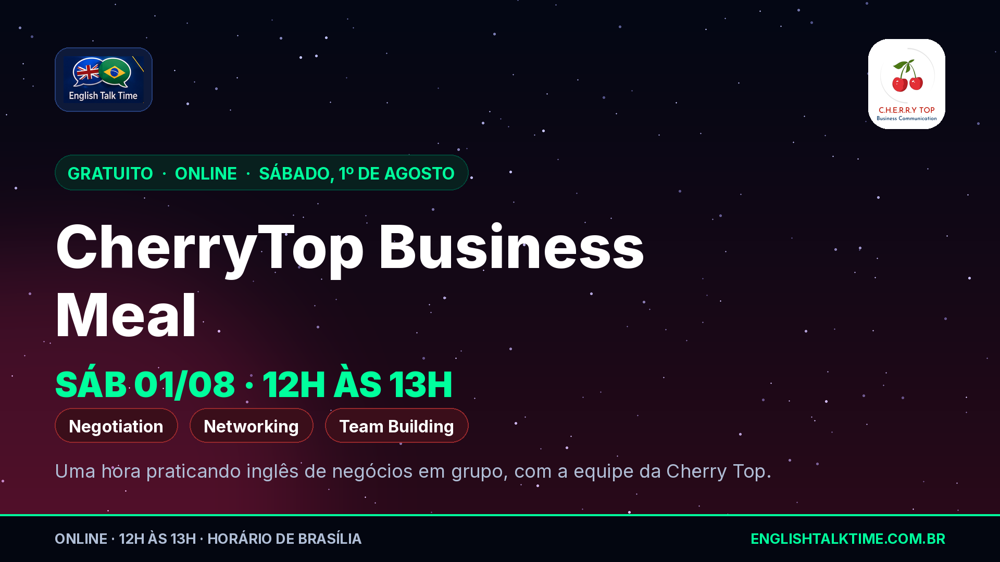
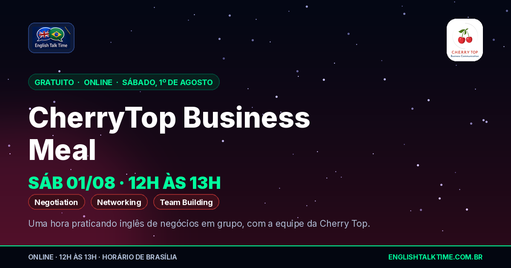

Experiência imersiva online da Cherry Top pra praticar inglês de negócios —
negotiation, networking e team building. O ETT está divulgando pra comunidade.
Aqui estão as artes, os textos por rede e o e-mail pronto.
Quando: sábado, 01/08/2026, 12h–13h (Brasília)
Onde: online
Quanto: gratuito
Sala: ett-speak.vercel.app/r/cherrytop
01Links oficiais
São dois links com papéis diferentes: a sala é onde o encontro acontece no sábado
ao meio-dia; o grupo de WhatsApp é onde saem as vagas e o atendimento one-to-one da
tarde (só pra quem está no grupo). Os textos abaixo trazem os dois.
Confirmar antes de disparar: o horário está sendo comunicado como
horário de Brasília — isso não estava dito na mensagem original, foi suposição.
E o link do grupo aqui é a versão limpa do convite (sem os parâmetros de rastreio que
vieram no WhatsApp).
02Artes
Arte tipográfica: não existe foto real desta atividade, e ilustrar um encontro online
com foto de imersão presencial passaria informação errada. Se surgir foto real,
é regerar com um comando.

Banner 16:91920×1080 · capa de post, topo de e-mail
Baixar PNGWebP

Preview de link1200×630 · WhatsApp, LinkedIn, X
Baixar
Todos os blocos deixam claro que a realização é da Cherry Top e que o ETT divulga.
Nada de promessa de resultado — só o que foi combinado: uma hora, três temas, online.
LinkedIninstitucional · 3 parágrafos
🍒 Sábado, 1º de agosto, 12h: CherryTop Business Meal — uma hora praticando inglês de negócios, online e gratuito.
A atividade é da Cherry Top, parceira do ETT nas imersões, e o foco é bem específico: negotiation, networking e team building. Não é aula de gramática — é conversa em situações de negócio, do jeito que elas acontecem numa mesa.
No sábado, é só entrar na sala no horário. E quem entra no grupo de WhatsApp da atividade também tem, na parte da tarde, as dinâmicas one-to-one online com a equipe da Cherry Top.
Sala do encontro: https://ett-speak.vercel.app/r/cherrytop
Grupo de WhatsApp: https://chat.whatsapp.com/LEpi3Cm9cWv20kBHg5xjdb
Sobre o ETT: https://englishtalktime.com.br
#EnglishTalkTime #CherryTop #businessenglish #networking #inglesparatech
Instagramfeed · link na bio
🍒 CherryTop Business Meal — sábado, 1º de agosto, 12h.
Uma hora praticando inglês de negócios: negotiation, networking e team building. Online e gratuito. A atividade é da Cherry Top, parceira do ETT.
No sábado você entra direto na sala. No grupo de WhatsApp saem as vagas e o one-to-one da tarde.
Links na bio: sala do encontro e grupo.
.
.
#EnglishTalkTime #CherryTop #businessenglish #inglesdenegocios #networking #praticaringlês #inglesonline #inglesparatech
WhatsApp / Telegramencaminhável
🍒 *CherryTop Business Meal — sábado, 01/08, 12h às 13h*
Uma hora praticando inglês de negócios (negotiation, networking e team building), online e gratuito. Realização da Cherry Top, parceira do ETT.
Sala do encontro: https://ett-speak.vercel.app/r/cherrytop
Grupo (vagas + one-to-one da tarde): https://chat.whatsapp.com/LEpi3Cm9cWv20kBHg5xjdb
X / Twitterdentro dos 280
🍒 Sábado, 1º/08, 12h: CherryTop Business Meal — uma hora de inglês de negócios (negotiation, networking, team building). Online e gratuito, realização da Cherry Top. Sala: https://ett-speak.vercel.app/r/cherrytop #EnglishTalkTime
Repost1ª pessoa · Cherry Top, equipe ou participante
Sábado, 1º de agosto, às 12h, tem CherryTop Business Meal: uma hora online praticando inglês de negócios — negotiation, networking e team building. É gratuito.
A sala é esta: https://ett-speak.vercel.app/r/cherrytop
E quem entra no grupo de WhatsApp da atividade ainda pega as dinâmicas one-to-one com a equipe da Cherry Top na tarde de sábado: https://chat.whatsapp.com/LEpi3Cm9cWv20kBHg5xjdb
04E-mail (RD Station)
Abra email.html, use “ver código-fonte”, copie tudo e
cole em RD Station → E-mails → Criar e-mail → Código HTML. Sugestões de assunto no
comentário do topo do arquivo. O descadastro é inserido pela RD — não duplique.
É esta semana: a atividade é sábado, 01/08. Pra o e-mail sair com a imagem
carregando, o pull no painel do Hostinger precisa acontecer antes do disparo —
a arte do topo é servida por URL absoluta deste site.
{kind=link}
{kind=link}
{kind=link}
{kind=link}
{kind=link}
{kind=link}